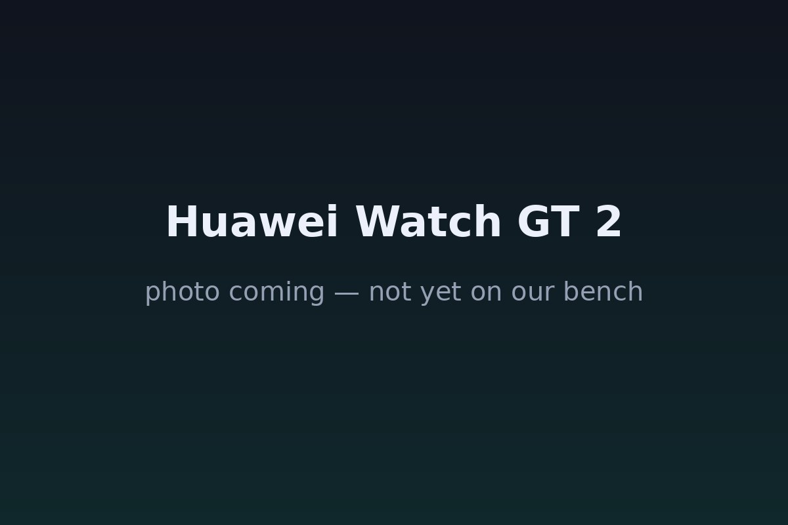

The Autopsy Report · Device #057
Huawei Watch GT 2
Two weeks of battery, a proprietary OS, and a chip with no public datasheet. The Watch GT 2 is well documented as a product — and a ghost as a circuit board.
What is this thing?
The Huawei Watch GT 2 is a smartwatch built around battery life and fitness: Huawei claims up to two weeks per charge on the 46 mm model. It comes in 42 mm and 46 mm sizes with AMOLED displays, runs Huawei's LiteOS, and carries Huawei's Kirin A1 chip with Bluetooth 5.1. The model designations include DAN-B19 and LTN-B19. YugaTech · FoneArena · Beebom
Not yet on our bench
Straightforward honesty first: BareBoard has not possessed, disassembled, tested, booted, or touched the firmware of this unit. We don't have one on the bench yet. Everything below is built from public records — FCC filings, manufacturer material, datasheets, manuals, and published teardowns — with every claim linked to its source and graded for confidence. When a fact genuinely requires our hands on hardware (boot logs, our own photos, exact board revision of a future unit), we say so out loud.
That framing is what makes publishing now legitimate: this is a public-records autopsy, and it will grow into a bench autopsy the day a unit lands on our desk.
A short history
- September 19, 2019Huawei announces the Watch GT 2 — Kirin A1, LiteOS, and the two-week battery claim. YugaTech · FoneArena
- October 2019The watch ships. Beebom
- November 2019Launch coverage in India and elsewhere confirms the spec sheet — 46 mm and 42 mm variants, 455 mAh claimed for the 46 mm. FoneArena · Lowyat
The outside
Round AMOLED display in a metal case, standard quick-release straps, and on the 46 mm model a speaker and microphone for Bluetooth calling. The back carries the optical heart-rate sensor window. FoneArena

The board
Honestly: we don't know. No public teardown identifies the Watch GT 2's board, and we found no U.S. FCC authorization for DAN-B19 or LTN-B19 — so the regulator-photo path other devices enjoy doesn't exist here either. What the product record supports: the Kirin A1 chip, GPS, an optical heart-rate sensor, accelerometer, gyroscope, barometer, and ambient light sensor. The 46 mm model is reported with a 455 mAh battery; some launch sources mention 2 GB of storage. Exact board layout, power tree, and sensor part numbers are unknown. FoneArena · Innovation Village
Under the microscope: the chips
One chip is publicly named; everything else is unknown. Confirmed needs a primary source, Likely needs corroborated public records.
| Chip | What it does | How we know | Dig deeper |
|---|---|---|---|
| HiSilicon Kirin A1 | The main chip: application processing plus Bluetooth 5.1 in one. YugaTech | Likely Named across launch coverage. Beebom | No public datasheet was found — HiSilicon does not publish datasheets for the Kirin A1. |
Still unidentified in public records: the sensor part numbers, the power-management chips, and the storage device. No public Kirin A1 datasheet exists.
The government's file on this device
There isn't one — at least not in the U.S. We found no FCC authorization for the Watch GT 2 (DAN-B19 / LTN-B19). That means no public internal photos, no test reports, no confidential-holdings list from the FCC. The regulatory record that exists lives in other countries' certifications, which we haven't verified in this pass.
Debug & service modes
Our posture: we listen, we don't knock. Only publicly verified interfaces.
User-facing: pairing, updates, and factory reset happen through the Huawei Health app and the watch's own settings — ordinary, documented, user-level operations. FoneArena
No public debug interface. No serial console, JTAG header, or diagnostic mode appears in any public record we found.
What the public record says
A product, not a circuit. The Watch GT 2 is one of the best-reviewed battery-life smartwatches of its era — and one of the least documented at the board level. Every launch outlet repeats the same spec sheet; nobody published a teardown. Lowyat · Innovation Village
The Kirin A1 is a black box by policy. HiSilicon publishes no public datasheet for it, so even the one named chip can't be taken further from public documents.
What we didn't do
- We have not possessed, disassembled, tested, or booted this device.
- We have not extracted, modified, shared, or reverse-engineered its firmware.
- We document only publicly verified interfaces and user-facing modes — read-only, no lock bypass, no authentication defeat, no credential or key material.
- Anything below marked as unknown stays unknown until the bench says otherwise.
By the numbers
- Models: DAN-B19 / LTN-B19 — no U.S. FCC filing found
- Chip: HiSilicon Kirin A1 (no public datasheet)
- Display: AMOLED, 42 mm and 46 mm variants
- Battery: 455 mAh claimed for 46 mm (launch coverage)
- Storage: 2 GB claimed in some launch coverage (unverified against a primary source)
- Announced: September 19, 2019 · shipped October 2019
Words to know
Every term this page uses, in plain English. No prior knowledge required.
- LiteOS
- Huawei's lightweight operating system for wearables — the watch's software platform.
- Kirin A1
- HiSilicon's chip for wearables: processor plus Bluetooth 5.1 in one package.
- AMOLED
- A display technology where each pixel makes its own light — vivid, and power-sipping on dark screens.
- FCC
- The U.S. regulator that approves wireless devices. No filing here means no regulator photos to learn from.
Sources & confidence
- Announcement, Kirin A1, LiteOS, Bluetooth 5.1, sizes, battery and storage claims: launch coverage from YugaTech, FoneArena, Lowyat, Beebom, Innovation Village — Likely.
- No U.S. FCC authorization for DAN-B19/LTN-B19: negative result from our search — stated as such, not as a claim about other countries.
- Board layout, sensor part numbers, power chips: unknown — no public teardown found.
- Anything not listed here is unknown until the bench says otherwise. We'll say so, out loud, when that's the case.
Serial numbers and QR codes are blacked out of every published photo. Raw originals stay private.
Legal note. BareBoard is an educational project. Everything on this page comes from public records — FCC filings, manufacturer material, datasheets, and published teardowns — plus our own analysis of those records. We don't publish, host, or distribute firmware, keys, passwords, or credentials. Product names and trademarks belong to their respective owners and appear here only to identify the hardware. If you believe anything here infringes your rights, contact us and we'll address it promptly.